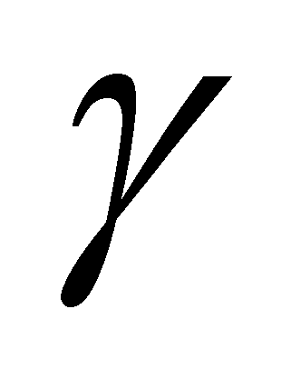

|
|
|
If we are analyzing the properties of the surrounding real objects, we shall observe that these properties are found in a finite number, moreover, some of their properties are common to a group of different objects. We might say that the set of the attributes (properties) of the real objects is finite inside a specific language (for instance, the natural language). This finite set of attributes may be found inside that particular language under the form of a finite set of words - the lexical fund which defines the objects’ attributes. We may also notice that, according to our sense organs, the objects’ properties may be divided into the following groups:
Visual properties: shape, color, spatial position (against the eye’s inner reference, against the inner reference of the human body and against the inner reference of the aimed object), motion velocity, surface state (gloss, texture etc.) etc.
Tactile properties: hardness, surface roughness, spatial position of the area with pressure contrast against the inner reference of the body’s position etc.
Auditory properties: noise produced by an object or by the motion of hand or of other object across its surface, noise produced by the bursting or breaking of the object, direction (spatial position) of the noise source etc.
Thermal properties: warm, cold (as compared to the skin temperature, that is the thermal sensors zone), spatial position of the area with a temperature contrast as compared to the inner reference of the body’s position etc.
Kinesthetic (proprioceptive) properties: shape, weight, spatial size grade, relative position against the body’s inner reference etc, which are properties given by the spatial distribution of the constriction and straining degree of the muscles “from the endowment” of the bio-system.
Gustatory and olfactory properties, stereo-chemical structure attributes of some molecular fluxes with liquid and gaseous support which are generated by the object etc.
Comment 8.2.1: Besides the above-mentioned properties, which may be referred to as direct sensory properties, there is also a non-specified number of indirect properties, which are obtained by means of the artificial flux converters, extension means of the perception thresholds beyond their natural domains (photon domain IR, UV, X, , or of the temperature which is lower or higher than the domain of the thermal receivers, infra or ultra acoustic domain, electric or magnetic properties etc.). The aspect which must be underlined is that any indirect property is converted into a direct property (sensorial), the only access way to the inner IPS specialized in relations with the outside (the somatic nervous system). There is another extended class of processual (behavioristic) properties which may be applicable both to the abiotic MS, but mostly to the bio-systems, which differentiate the systems based on the way in which they behave during some specific processes. For example, properties such as flexibility, malleability, ductility etc. refer to the way how that particular material behaves during some specific processes: bending, deformation, drawing etc. As for the humans, these behavioristic attributes are more numerous than the direct attributes, denoting character types (choleric, sanguines, phlegmatic etc.), psychic moods (cheerful, sad, cool, excited etc.), and many more. However, all these behavioristic attributes are complex objects, made-up from successions (temporal distributions) of direct properties which are monitored on long periods of time during the body’s lifetime. Some sense organs have been voluntarily omitted, either due to their limited role into the human perception (such as the vomeronasal organ), or due to the fact that they have no connection with the perception of the outer fluxes (such as the vestibular system or the perception system of the body’s inner states).
Now, let us analyze each of these properties groups in order to notice what are their causes (which is the material support of the properties). Based on the current knowledge level, we know that the visual and thermal properties are provided by means of the photon fluxes emitted or reflected by the perceived object; if the photons have wavelengths included in the visible domain (400…800 nm), they will be perceived by the sight sensors (as a visual sensation), whereas, if they have wavelengths reaching the infrared domain (900 nm….1 mm), they will be perceived by the thermal sensors (as a thermal sensation).
The auditory properties of an object are provided to us by means of the pressure waves generated into the medium (air, water etc.) which separates us from the object, by the processes which take place into the emitter object. These waves are propagated through that medium (therefore, we are dealing with a propagation flux as well), a part from this flux being captured by our sense organ. In this case, it means also a perceptible frequency domain (20…20000 Hz).
The tactile and kinesthetic properties are also provided to us through fluxes, but this time we are dealing with stochastic (pressure) fluxes. The tactile sensors perceive the pressure produced at the direct contact between skin (sensors’ area) and RBS of the perceived object, whereas the kinesthetic sensors also perceive a pressure (stretching, straining) of the muscular fibre.
The gustatory/olfactory properties are transmitted by means of molecular fluxes coming from the perceived object and they are either airborne, in case of the olfactory sensors, or carried by a liquid medium (water-based solutions, suspensions or emulsions), in case of the gustatory sensors.
The following conclusions may be drawn based on the above-mentioned issues:
Any real object is identifiable (recognizable) only by means of the reunion of its properties perceived by our sense organs and stored in our memory, properties which are distributed on the object’s finite spatial domain.
The object’s properties (attributes) reach to us through specific fluxes which are efferent to the object (from the object towards our sense organs) - photon fluxes for the visual and thermal sensors, molecular fluxes for the gustatory and olfactory sensors, stochastic (pressure) fluxes for the tactile and acoustic sensors, etc.
The fluxes perceived by our sense organs are either produced by the object (emergent from its inner section) or inflected (reflected) by it, therefore, these fluxes would not be able to exist in the absence of the source object.
The presence of an efferent flux from an object, whose intensity exceeds the detection threshold of the specific sense organ, may be considered for the perception system as an information which certifies the object’s existence (at the moment of perception).
The above-mentioned sensorial properties are basic (elementary) properties of the objects from the real (material) world, therefore, these properties and their associated processes make-up the basis of all the upper level properties (more complex) of any real object.
Each sense organ is specialized in the receiving (detection, perception) of a certain type of material flux (either it is coherent or stochastic, propagation or displacement type), therefore, each distinct property of a real object is due to a certain type of flux, to its intensity, spatial, temporal or frequency distribution on the spatial domain occupied by the object.
We have seen that the variation (change, modification) throughout time of certain properties associated to an object is called a specific process. Because each elementary property is based on a certain flux type, each specific process of that particular property is based on a process through which the support flux undergoes, as well as the source object of that particular flux.
Copyright © 2006-2011 Aurel Rusu. All rights reserved.